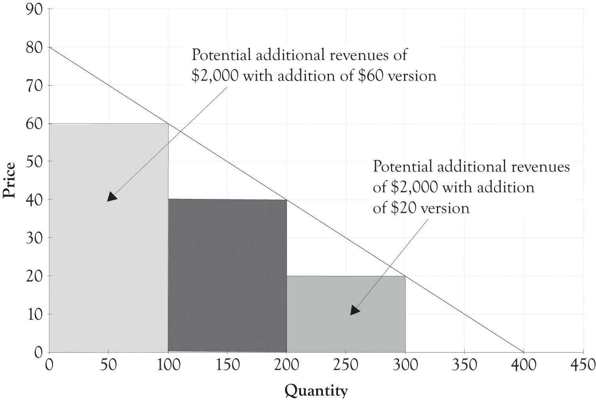
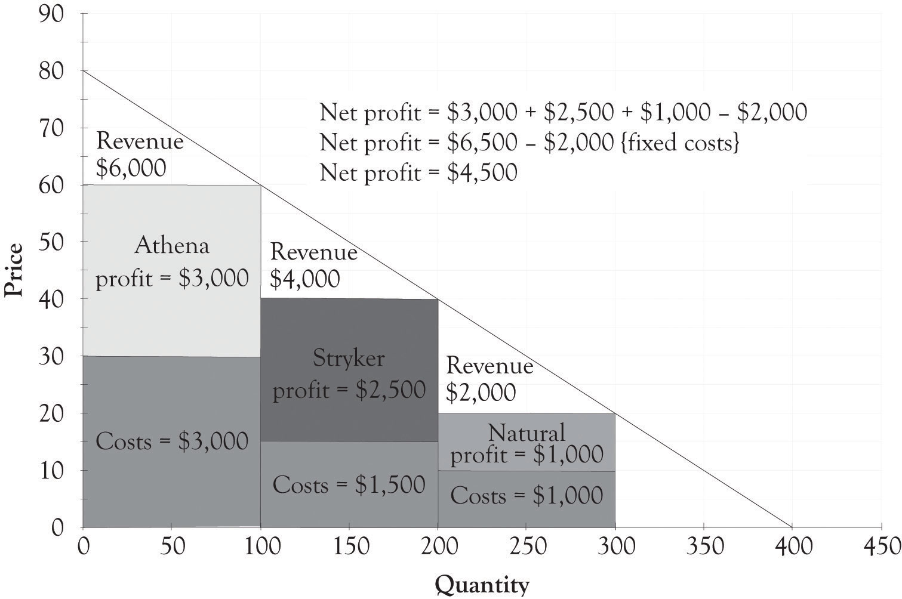
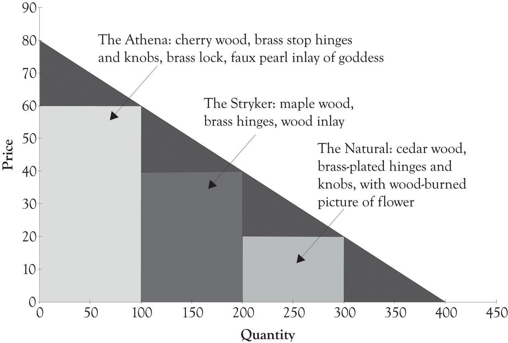

Joan really enjoyed owning a business and being an entrepreneur, but she wanted more. After rereading an interesting article on price discrimination by Hal Varian,Varian (1996). Joan decided to expand her product line. Expansion was easy because she had plenty of floor space and could hire one of her talented nephews to assist in producing the boxes. Joan understood the relationship between price discrimination and profitability and this led her to design an additional high-end version and a low-end version of her jewelry box.
Figure 3.3 Potential Revenue When Adding Versions
The fixed costs for the two new products were about the same. In addition, the variable cost for the high-end jewelry box was $30 and the low-end jewelry box was $10. As illustrated in Figure 3.3 "Potential Revenue When Adding Versions", this resulted in additional revenue of $2,000 for the high-end jewelry box and $2,000 for the low-end jewelry box. Now that there is a high-end jewelry box, 100 customers will purchase the high-end box instead of the middle-level box. There are also 100 new customers who will now be willing to pay for a $20 jewelry box. The total revenue for the three boxes is $12,000. The net profit with only one type of jewelry box was $3,000. The net profit with three versions was $4,500 as illustrated in the following calculations:
Profit = ($60 − $30) × 100 + ($40 − $15) × 100 + ($20 − $10) × 100 − $2,000 ← {fixed costs} Profit = $3,000 + $2,500 + $1,000 − $2,000 Profit = $6,500 − $2,000 Profit = $4,500Notice that there are only 100 additional people purchasing the $40 box because 100 customers are now purchasing the high-end jewelry box for $60. There are also only 100 people who will purchase the low-end box. If Joan just adds the high-end box, her profit will increase from $3,000 to $3,500. If she just adds the low-end box, then her profit will increase from $3,000 to $4,000. If she adds both a low-end and high-end box, her net profit will increase from $3,000 to $4,500. The decision to expand and offer additional product versions is complex and will have a profound effect on her business model. She will of course examine her current operations and cost structure and make decisions on what versions, if any, that she will produce.
After considerable soul searching and analysis, Joan decides to introduce three different jewelry box versions. Figure 3.4 "Financial Structure for Three Versions of Joan's Jewelry Boxes" illustrates the financial profile for the three jewelry versions designated as the Athena, the Stryker, and the Natural. Figure 3.5 "Differentiating Features for Three Versions of Joan's Jewelry Boxes" provides an overview of how the features of each version of the jewelry box are used to differentiate each version.
Figure 3.4 Financial Structure for Three Versions of Joan's Jewelry Boxes
Figure 3.5 Differentiating Features for Three Versions of Joan's Jewelry Boxes
The Athena jewelry box is a high-end product targeted toward nonprice-sensitive consumers. It is part of what we refer to as a Midas product that was extravagantly engineered and designed. The Natural jewelry box is a Hermes product and is targeted toward price-sensitive consumers, and it was frugally engineered and contains basic features. The Stryker jewelry box is an Atlas product designed for the middle ground. The Stryker has several attractive features; yet it is still priced between Midas and Hermes versions. The Stryker is a mainstream version that appeals to the widest audience. Additional motivation behind the three versions will be presented in Chapter 5 "Examples of Product Differentiation & Versioning Curves".